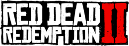

Red Dead Redemption II
- Introduction
L'Amérique, 1899. La conquête de l'Ouest touche à sa fin, tandis que les forces de l'ordre traquent les gangs de hors-la-loi restants. Ceux qui ne rendent pas les armes sont tués. Après une tentative de braquage complètement ratée dans la ville de Blackwater, Arthur Morgan et le gang Van der Linde doivent prendre la fuite. Avec de nombreux agents fédéraux et les meilleurs chasseurs de primes du pays à leurs trousses, le gang va devoir braquer, voler et combattre pour sa survie dans les terres sauvages de l'Amérique. Alors que des conflits internes menacent de faire imploser le gang, Arthur doit choisir entre ses propres idéaux et le gang qui l'a élevé. Développé par les créateurs de Grand Theft Auto V et Red Dead Redemption, Red Dead Redemption 2 nous plonge en immersion totale dans l'Amérique à l'aube de l'âge moderne.
- L'histoire'
Red Dead Redemption 2 se déroule en 1899 et est une préquelle à Red Dead Redemption. « Amérique, 1899. L'ère de l'Ouest sauvage touche à sa fin alors que les autorités ont décidé de traquer les dernières bandes de hors-la-loi qui sévissent encore. Ceux qui ne se rendent pas ou résistent sont tués.
- Les personnages
L'histoire de Red Dead Redemption 2 est centrée autour de la bande de Van der Linde. C'est un groupe de hors-la-loi, de renégats et de marginaux avec à leur tête le charismatique Dutch van der Linde. Après avoir longtemps vécu au-dessus des lois, ils craignent désormais d'avoir à le payer.
Développeur Rockstar Studios Editeur Rockstar Games Début du projet 2010 Date de sortie 26 octobre 2018 (PS4) Genre Action Aventure Plateforme PS4 - Xbox One - Windows - Stadia
« Plus que pour son visuel sidérant de beauté et son effarante perfection sonore, Red Dead Redemption II se révèle précieux pour ce qu'il a à raconter et sa manière de faire évoluer de façon crédible la dimension familiale de la bande, centrale dans cette suite. » jeuxvideo.com